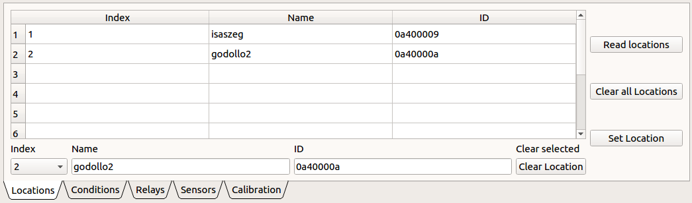
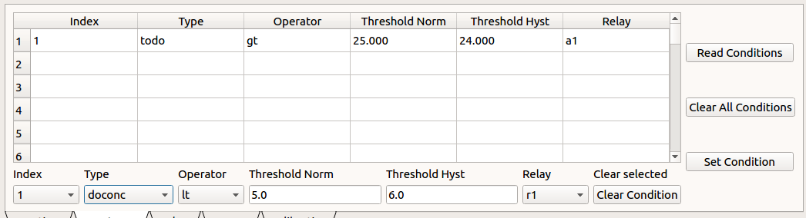

Kapcsolódás az Intense rendszerhez
- A kapcsolódáshoz az Intense rendszert USB-RS232 átalakítóval kapcsoljuk hozzá a PC-hez.
- A kapcsolódáshoz nyomjuk meg a "fogaskerék" 1 gombot.
- Az alábbi párbeszéd ablakot kapjuk:
A "Select Serial Port" legördülő menüből válasszuk ki a megfelelő portot, ez egyéb USB-RS232 konverter távollétében a ttyUSB0 lesz. A többi paraméter a fenti ábráról leolvasható.
A kapcsolódáshoz nyomjuk meg a 2 gombot, majd a 3 gombot. Sikeres kapcsolódás esetén a megjelennek a konfigurtációs táblázatok oszlopai, illetve a fekete terminál ablakban láthatóvá válik a kommunikáció.
Locations fül
A Locations fülön tudjuk a medenceazonosítókat kiolvasni, hozzáadni és törölni. A Read Locations gombbal lekérhetők a hardveren tárolt medenceazonosítók. A medenceazonosítók konfigurálását mindig ezzel a gombbal kezdjük. A gomb megnyomása után a táblázatban felsorolva megjelennek a tárolt medenceazonosítók.
Az "Index" az azonosítók sorszáma, hozzáadáskor ennek mindig eggyel nagyobbnak kell lennie mint a listában szereplő utolsó azonosító indexe. Új medenceazonosítót a szükséges adatok kitöltése után a Set Location gombbal tudunk a rendszerhez hozzáadni. Ha már létezik egy index és mi ugyanazon sorszámmal kívánunk azonosítót hozzáadni, a létező azonos indexű azonosító visszavonhatatlanul felülíródik!
Adott medenceazonosító törléséhez kattintsunk a törölni kívánt azonosító sorának bármelyik cellájába es nyomjuk meg a Clear Location gombot.
A Clear all Locations gomb az összes létező azonosítót törli.
Conditions fül
A Conditions fülön tudjuk a beavatkozási feltételeket konfigurálni. A "Read Conditions" gombbal a tárolt a feltételek kérdezhetőek le. A feltételek konfigurálását mindig a feltételek beolvasásával kezdjük. A gomb megnyomása után a táblázatban megjelennek a tárolt feltételek:
Az "Index" az azonosítók sorszáma, hozzáadáskor ennek mindig eggyel nagyobbnak kell lennie mint a listában szereplő utolsó azonosító indexe. Új feltételt a szükséges paraméterek kitöltése után a Set Condition gombbal tudunk a rendszerhez hozzáadni. Ha már létezik egy index és mi ugyanazon sorszámmal kívánunk feltételt hozzáadni, a létező azonos indexű feltétel visszavonhatatlanul felülíródik!
Adott feltétel törléséhez kattintsunk a törölni kívánt azonosító sorának bármelyik cellájába es nyomjuk meg a Clear Condition gombot.
A Clear All Conditions gomb az összes létező feltételt törli.